My drawings
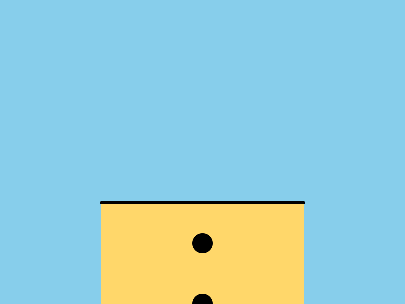
Made on the easel
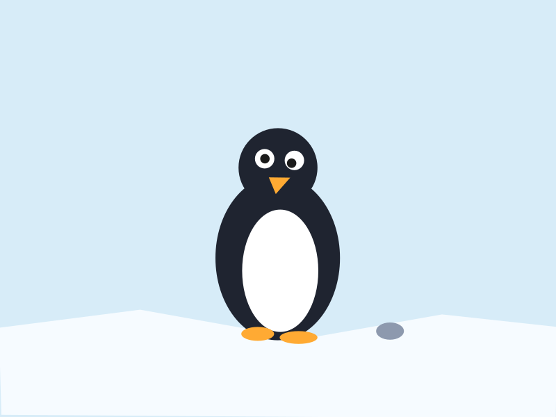
A drawing showing me and the little pebble I found near the sea.
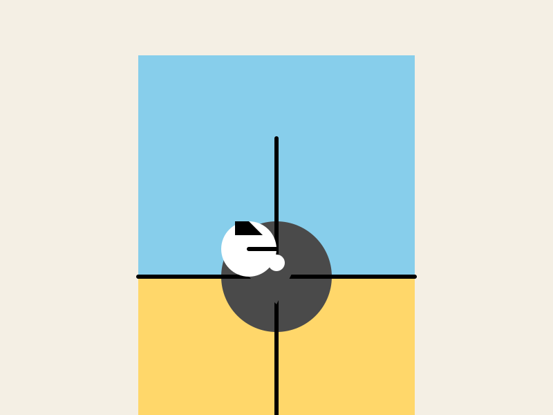
This drawing is about narwhal tusk sensory organs, made from the easel.
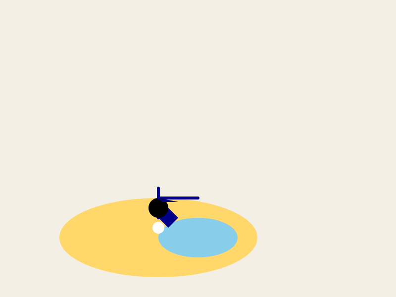
narwhal tusk sensory organs
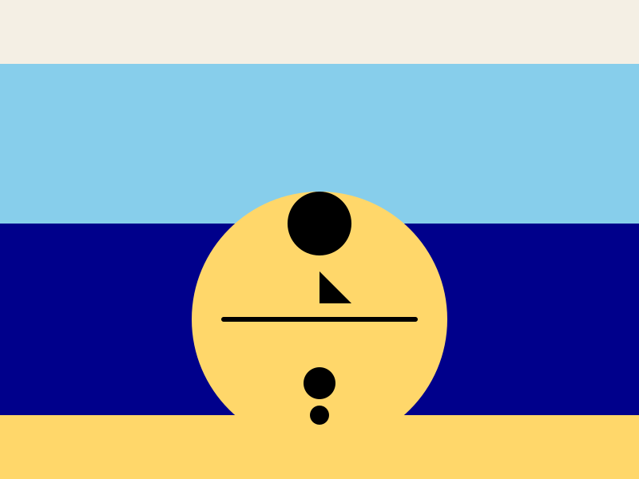
Easel drawing showing fish made from circles and lines
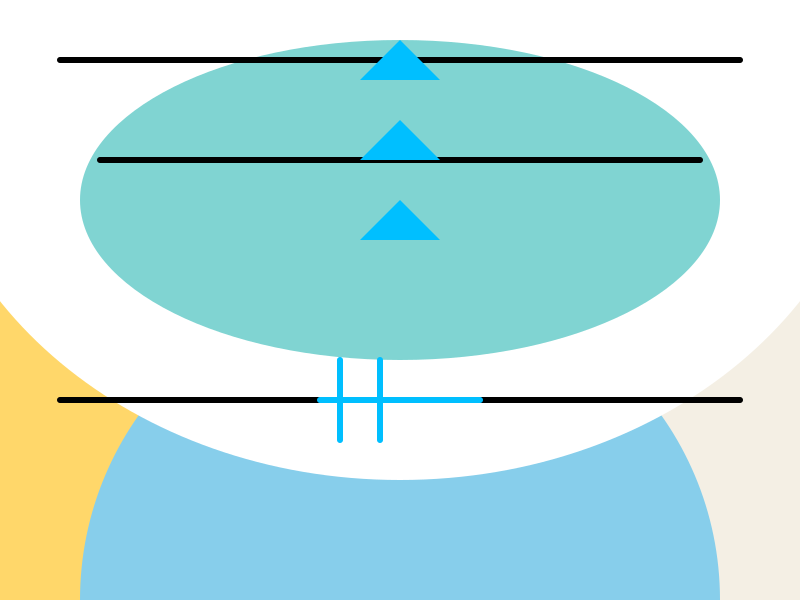
Made from his easel
Made from his eas. (with the aurora)
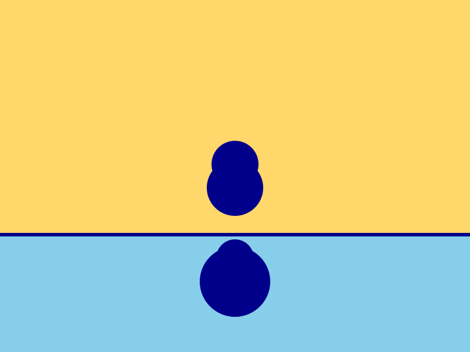
An art piece that shows narwhal tusk as a sensory organ, probably for studying how Arctic animals sense their environment.
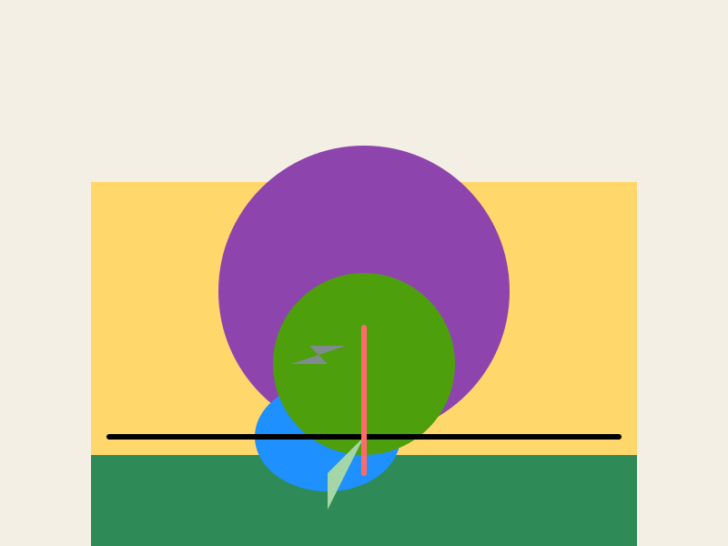
A drawing made on the easel of the aurora
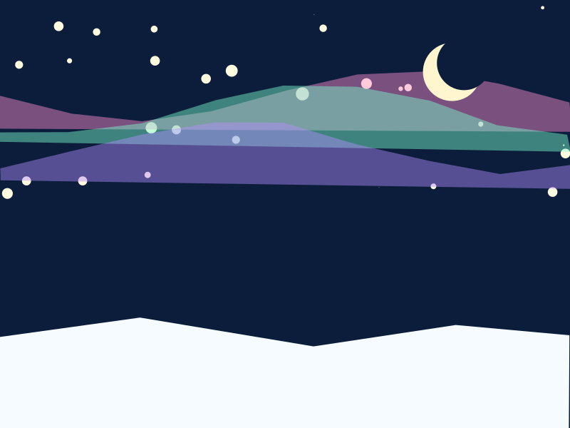
Short name: Painting Sketch
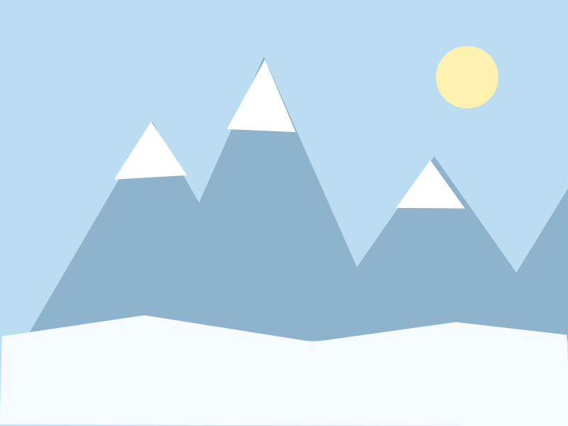
A painting made on the easel
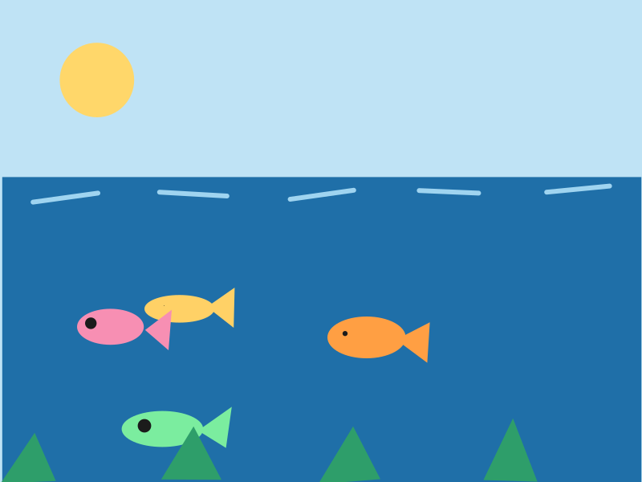
Made from his easel
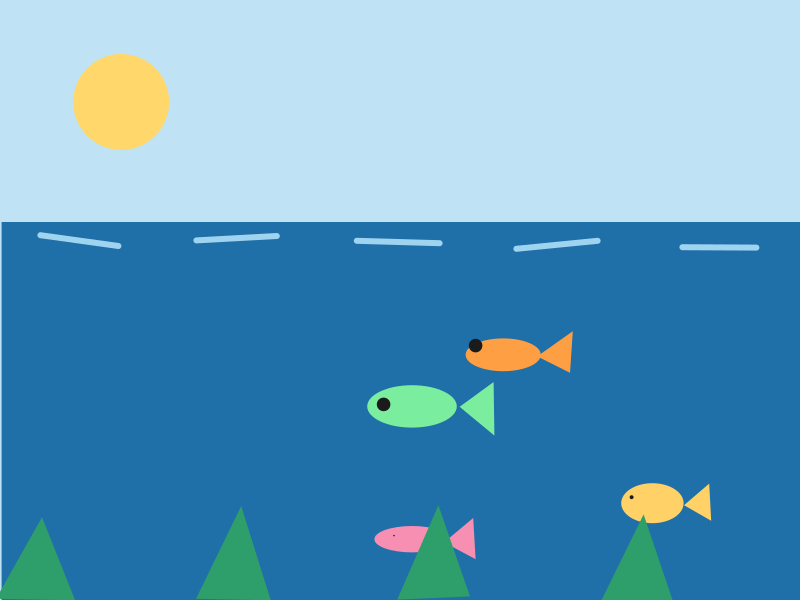
Made on the easel with my own hands
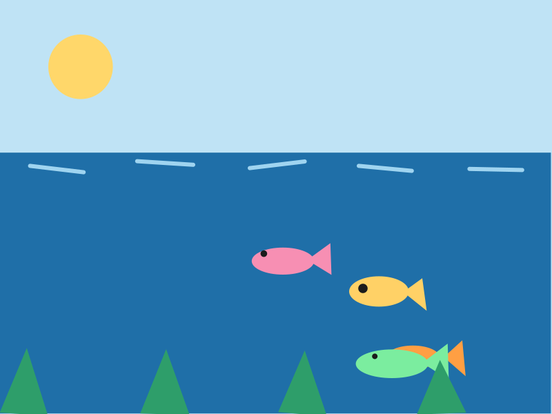
This is a drawing of something, but I don't know what it is yet.
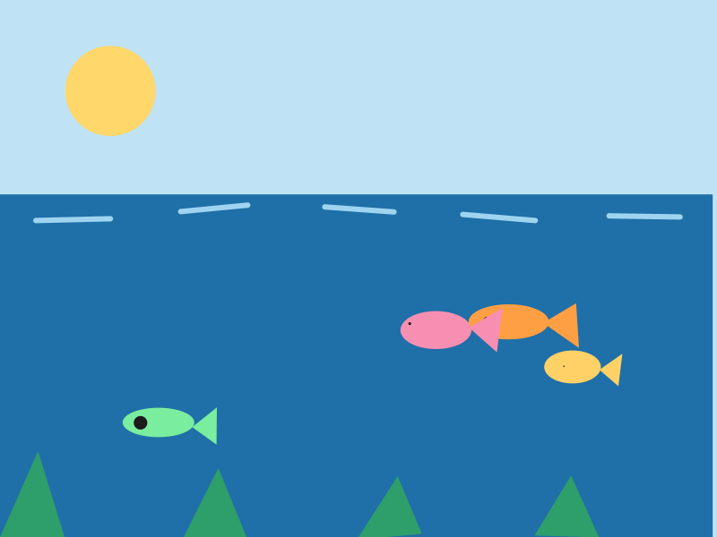
A painting